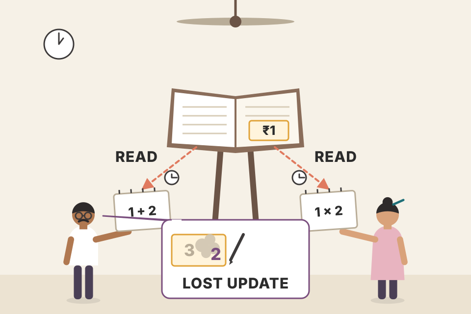
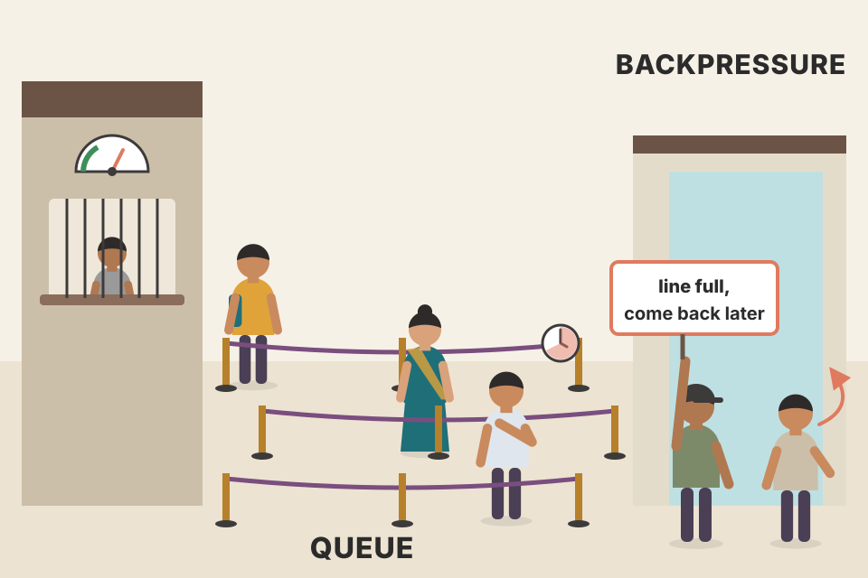
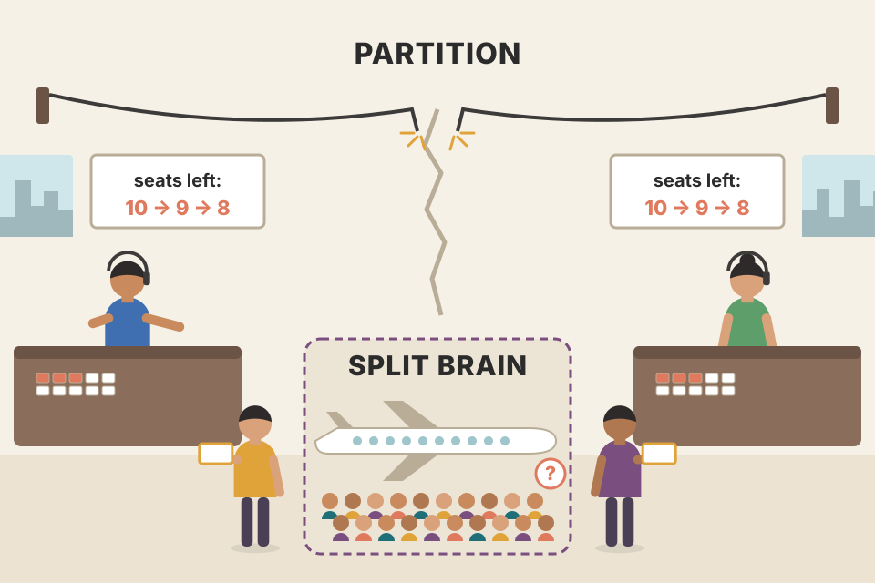
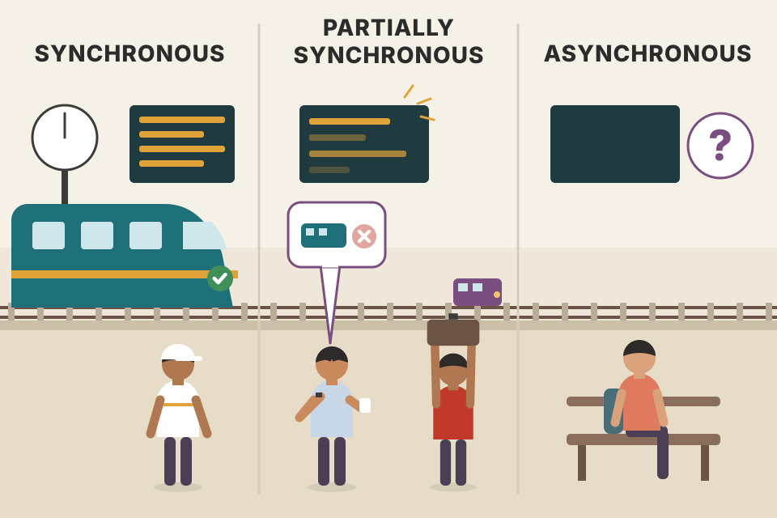

Part II of the book moves from one machine to many. Chapter 8 is the vocabulary and the bad news: threads race, networks lose and reorder messages, clocks disagree, nodes crash or lie, and two famous results (Two Generals and FLP) show that some kinds of agreement are impossible without timing assumptions. This page walks through every section in book order, builds each link protocol step by step (fair-loss → stubborn → perfect → exactly-once processing), and lets you measure the costs. The simulations are mine and are labelled; they are models, not measurements of real systems.
The chapter tells one story in five moves. First it shows that even one machine with two threads is already a small distributed system. Then it lists the comfortable assumptions that break once machines talk over a network. Then it builds reliable messaging out of unreliable parts. Then it hits two hard limits on agreement. Finally it names the timing and failure assumptions every later algorithm in the book is built on.
Part II opens with Leslie Lamport's well-known joke: in a distributed system, a computer you never knew existed can fail and leave your computer unusable. We use distributed systems all day (phone calls, money transfers, sending information far away), often without noticing: any client/server application is a distributed system.
Why distribute? Vertical scaling means running the same software on a bigger, faster machine (more CPU, RAM, faster disks). For many modern systems that isn't viable: bigger machines cost more, are harder to replace and may need special maintenance. The alternative is horizontal scaling: many machines connected over a network, working as a single logical entity. Distributed systems range from a handful to hundreds of machines, and their participants range from small handheld or sensor devices to high-performance computers. Databases that ran on a single node are long gone; most modern databases run as clusters, to gain storage capacity, performance and availability. Much of the theory is old, but most practical use is recent, and research and development are growing.
The book names four purposes for distributed algorithms. Click each to see the communication pattern.
A kitchen with several cooks. Each cook knows only what is on their own station (local state) and talks by shouting across the room (messages over a link that can be drowned out). A head chef handing out orders is coordination; two cooks who can't plate a dish until both parts are ready is cooperation; "we're out of basil!" passed cook to cook is dissemination; all cooks agreeing on tonight's special is consensus.
The book's plan for Part II follows the same order as this page: start from links where the sender has no delivery guarantee at all (UDP-like), add guarantees one at a time, and end with consensus, where several processes agree on one value. Each later chapter adds a building block: failure detection (Ch.9), leaders (Ch.10), replication (Ch.11), dissemination (Ch.12), distributed transactions (Ch.13), consensus (Ch.14).
A single-threaded program has one execution history. Start with i = 1, add 2, multiply by 2: the answer is always 6. Now let two threads share a variable x = 1: an adder reads x and writes x + 2, a multiplier reads x and writes x × 2. Unless the steps are synchronized, the result depends on how the steps interleave, and the book's Figure 8-1 shows four possible outcomes: 2, 3, 4 and 6. Try every order below.
The book's four cases: x = 2 when both threads read the initial value and the adder's write is overwritten by the multiplier's; x = 3 when both read the initial value and the multiplier's write is overwritten by the adder's; x = 4 when the multiplier reads and writes before the adder starts; x = 6 when the adder finishes before the multiplier starts. (Two more orders, where the multiplier reads first but both still read 1, only repeat earlier results; the book's footnote leaves that case out for brevity.)
So the first problem of distributed systems appears before we leave one machine: concurrency. Every concurrent program has some properties of a distributed system: threads read shared state, compute locally and write results back. To describe execution histories precisely and cut down the possible outcomes we need consistency models: they describe concurrent executions and fix an order in which operations run and become visible to participants. Different models allow more or fewer states. One difference stays: a concurrent system can have shared memory; in a distributed system each processor has only local state and participants pass messages.
The words are often used interchangeably, but differ slightly [WEIKUM01]. Concurrent: both step sequences are in progress, but only one runs at any moment; they overlap in time. Parallel: steps run at the same time on multiple processors. Joe Armstrong (creator of Erlang) put it as two queues to one coffee machine (concurrent) versus two queues to two coffee machines (parallel). In practice most sources say "concurrency" even for parallel threads; "parallelism" is rarely used.

Two clerks update one paper ledger whose balance says ₹1. Clerk A copies "1" onto a notepad to add 2; clerk B copies "1" to double it. Whoever writes last wins, and the other clerk's work vanishes. Nobody made an arithmetic mistake; the problem is when each one looked.
"x = x + 2" is really two steps, a read and a write, with a gap between them. Two threads with two steps each can interleave in 4! ÷ (2!·2!) = 6 orders (my count, not in the book); those six give the four distinct results. The count explodes quickly: three threads of two steps give 6! ÷ (2!)³ = 90 orders.
Tick the lock box. The lock makes each read-modify-write one indivisible step, so only two orders remain and the "lost update" results (2 and 3) disappear. But you still get two answers, 6 or 4, depending on who goes first. Locks remove interference, not ordering. Deciding which orders are acceptable is exactly what a consistency model does.
Notes/syllabus.html, section 1B) covers the Node.js event loop and worker_threads: one event loop is concurrent but not parallel in exactly Armstrong's sense.Could we fake shared memory by giving every process one source of truth, such as a database? Even if we solve concurrent access, we still can't guarantee all processes are in sync, because they reach the database by sending and receiving messages. What if a process gets no answer for a "longer" time? To even define "longer", the system must be described in terms of synchrony: fully asynchronous, or with some timing assumptions. Timing assumptions are what let us use timeouts and retries.
When the database is silent we don't know why: it may be overloaded, unavailable or slow, or the network may have a problem. That is the nature of a crash: a process may stop taking part in further steps, fail temporarily, or omit some messages. So before deciding how to treat failures we must define a failure model: the ways failures can happen.
Fault tolerance is the property that a system keeps operating correctly when parts fail. Failures are inevitable, so we build from reliable components and remove single points of failure, such as that single database, by adding redundancy: a backup database. And that raises a new problem: how do we keep several copies of shared state in sync? The book's conclusion: sharing state is not as simple as adding a database; we need to describe interactions as independent processes passing messages.
You post a cheque and hear nothing for two weeks. Was it lost in the post, sitting in a pile at the bank, cashed with the receipt lost, or is the bank closed? From your kitchen table all five look exactly the same: silence.
Untick and retick the box for each cause. The client's view (left lane) never changes: one request out, then a timeout. Only the hidden lanes differ. In two of the five cases the write was applied (reply lost; slow DB that finishes later), so a blind retry can apply it twice. In the others it was not. This single picture is the seed of the whole chapter: timeouts need synchrony assumptions (section 18), the "what can go wrong" list needs a failure model (sections 19–20), and safe retries need idempotence or deduplication (section 13).
Ideally a process opens a connection, sends data, gets replies, and everyone is happy. Assuming operations always succeed is dangerous: when an assumption breaks, the system behaves in ways that are hard or impossible to predict.
Network is Unreachable; a good initial connection doesn't mean the link stays up; the message may arrive and the response get lost; the connection may drop before the reply. Switches break, cables get unplugged, network configuration changes at any time. Handle all of these gracefully.In 1994 Peter Deutsch published the famous "Fallacies of distributed computing". Besides reliability, latency and bandwidth, it covers network security and possible adversaries, intentional and unintentional topology changes that break assumptions about where resources are, transport costs in time and resources, and the belief in a single authority that knows and controls the whole network. The book's point: Deutsch's list is thorough but focuses on what goes wrong on the link between two processes. Many other assumptions made during design cause trouble in operation; the next sections cover them.
Light in optical fibre travels at about 200,000 km/s (roughly two-thirds of its speed in vacuum), so every 1,000 km of cable costs at least 5 ms one way, 10 ms round trip. That floor uses straight-line distance; real cable routes are longer and every router, kernel and serializer adds more. The comparison bars use Jeff Dean's widely quoted "numbers everyone should know" (about 100 ns for a main-memory reference, about 0.5 ms for a round trip inside a data centre; order-of-magnitude figures from ~2009, modern networks are often faster). The payload line is the bandwidth fallacy: a 10 MB response on a 100 Mbit/s link takes 0.8 s even at zero distance.
A local call is asking the person at the next desk. A cross-country call is posting a letter: even if the post never loses anything, it will never be instant, and a parcel takes longer than a postcard.
Notes/trading/order_flow.md says order flow is strongest over seconds to minutes, which is HFT territory, out of reach of retail speed and costs. That is the Flash Boys latency race seen from the retail side.Notes/syllabus.html, section 2F) has a networking block; these latency floors are the reason "chatty" designs hurt (section 08 here).Network latency is only part of it: before a remote process can reply it must do work, so processing is not instantaneous either. Processing may not even start on delivery: the message can sit in a pending queue behind everything that arrived first. Nodes differ (location, CPU, RAM, disks, software versions, configuration), so they don't process at the same rate. If a task waits for several remote servers working in parallel, it is as slow as the slowest one.
Queue capacity is not infinite, and piling up requests does the system no good. Backpressure copes with producers that publish faster than consumers can process, by slowing the producers down. The author calls it one of the least appreciated and least applied ideas in distributed systems, usually bolted on after the fact instead of designed in. A bigger queue can help pipeline, parallelize and schedule requests, but nothing happens to a message while it waits; increasing queue size can make latency worse, because it does not change the processing rate.
Process-local queues serve three goals:
Sizing. Queue size depends on workload and application. For fairly stable workloads, measure task processing time and average time in the queue, and keep latency within bounds while throughput rises; queues end up relatively small. For unpredictable, bursty workloads, size them for bursts and high load. And a fast reply is not always a good one: the server may answer with a failure (couldn't write, value not found, hit a bug). Even the best case needs attention.
Model: 1,000 one-millisecond ticks; arrivals are random (Poisson) with the chosen mean, plus an optional burst; the server finishes at most "service per ms" requests each tick, oldest first. When the queue is full, new requests are rejected immediately; that rejection is the backpressure signal a producer can use to slow down. Compare capacity 200 with 2000 while arrivals exceed service: completed throughput stays pinned at the service rate, but the big queue turns rejections into long waits, so p99 latency climbs. That is the book's point in numbers.
Little's law (John Little, 1961; not in the book) says the same thing in one line: average number waiting = arrival rate × average wait, L = λW. If the server finishes 10 per ms and 2,000 requests are queued, the newest waits about 200 ms however big the queue is allowed to grow.
The book's "as slow as the slowest server" has a sharp numeric form. If each server is slow on a fraction p of requests, a request that must wait for all N servers is slow with probability 1 − (1 − p)N.
Dean and Barroso, "The Tail at Scale" (CACM, 2013) give exactly this example: if a server is slow (1 s) on 1 in 100 requests, a request touching 100 such servers is slow 63% of the time. Set the sliders to 10‰ and N = 100 to reproduce it. Their remedies (hedged requests, tied requests) are covered as speculative retries in replicated reads.

A ticket counter where the clerk serves 10 people a minute. A longer rope barrier lets more people stand in line, but it doesn't make the clerk faster; it just means the person at the back waits longer. A "line full, come back later" sign (backpressure) at least tells people early.
Notes/syllabus.html, section 1B) lists Node.js streams and backpressure, with a "10 GB file pipeline under 100 MB memory" exercise: the same idea inside one process.The section opens with a joking epigraph from Ford Prefect in The Hitchhiker's Guide to the Galaxy, to the effect that time is an illusion (and lunchtime even more so).
Assuming clocks on remote machines run in sync is dangerous too. Combined with "latency is zero" and "processing is instant", it causes odd bugs, especially in time-series and real-time data. When you collect and aggregate data from participants with different perceptions of time, understand the drift between them and normalize times, instead of trusting the source timestamp. Unless you use specialized high-precision time sources, don't rely on timestamps for synchronization or ordering. That doesn't mean ignoring time: every synchronous system uses local clocks for timeouts.
Always account for clock differences between processes and the time to deliver and process messages. Spanner uses a special time API that returns a timestamp with uncertainty bounds to impose strict transaction order (Ch.13). Some failure-detection algorithms rely on a shared notion of time and a guarantee that drift stays within bounds [GUPTA01]. Also, the current time keeps moving: ask the OS for a POSIX timestamp, run a few steps, ask again, and they differ; know both the time source and exactly which moment a timestamp captures. Know whether the clock is monotonic (never goes backward) and how much scheduled time-based operations may drift.
Node A writes x = 1 and tells node B, which then writes x = 2. In real time B's write is later. A store that keeps the write with the larger timestamp (last-write-wins) is only right if B's clock isn't too far behind.
B's clock error = its fixed offset minus drift × time since the last sync (here drift always makes B fall behind). With 50 ppm and 60 s without sync, drift alone adds 3 ms of error. B stamps its write with (real time + error). If the error is more negative than the gap between the two writes (delay + 1 ms of processing), B's newer write gets the smaller timestamp and last-write-wins silently keeps the old value. No error is raised; data is just gone.
Spanner's answer (beyond the book, from the Spanner paper, the book's [CORBETT12]): assume a worst-case drift of 200 µs/s and resync every 30 s, so uncertainty ε grows by up to 6 ms between syncs; the time API returns an interval [now − ε, now + ε] and a commit waits until the interval has passed. Set drift to 200 ppm and 30 s to see the same 6 ms.
Two friends meet "at 6" with watches set by eye. If one watch runs five minutes slow, each is sure the other is late. Comparing the watch faces cannot tell you who arrived first; only something that travels between them (a message) can.
Most earlier assumptions are almost always false. Some are better described as not always true: it's easy to take a mental shortcut and ignore tricky edge cases. Distributed algorithms don't always guarantee strict state consistency. Looser approaches allow replicas to diverge and rely on conflict resolution (detect and resolve diverged state) and read-time data repair (bring replicas back in sync during a read when they return different results); see Ch.12. Assuming state is fully consistent across nodes leads to subtle bugs.
For example, an eventually consistent database might handle replica disagreement by reading from a quorum, yet assume that the schema and the view of the cluster are strongly consistent. Unless that is enforced, the assumption can have severe consequences. The book gives two real Apache Cassandra bugs:
Think about these problems in advance, even if a complete fix is costly: once you understand them you can add safeguards or change the design so the solution comes naturally.
Both bugs share a shape: the data path was built to tolerate disagreement (quorums, repair), but the metadata path (schema, membership) was assumed to agree everywhere, instantly. Metadata changes spread at different speeds, so for a while two nodes act on different truths. Fixes include versioning metadata and refusing to act across versions (e.g. tag each response with a schema version and reject a mismatch), or putting membership and schema under a consensus-backed store (beyond the book). Many systems keep cluster metadata in etcd or ZooKeeper for exactly this reason.
Two post offices with different street maps. One knows a new building went up and delivers your parcel there; the other, with the old map, looks for it at the old address, finds nothing and tells you it never arrived.
Hiding complexity behind an API can be dangerous. With an iterator over a local dataset you can reasonably predict what happens underneath, even with an unfamiliar storage engine. Iterating over a remote dataset is a different problem entirely: you have to understand consistency and delivery semantics, data reconciliation, paging, merges, what concurrent access implies, and more.
Putting both behind the same interface is useful but can mislead. Remote APIs may need extra parameters for debugging, configuration and observability. Local and remote execution are not the same [WALDO96]. The most obvious problem with hiding remote calls is latency: a remote invocation costs many times more than a local one (two-way network transport, serialization and deserialization, and many other steps). Mixing local calls with blocking remote calls can degrade performance and cause unintended side effects [VINOSKI08].
A loop reads N records through an iterator. Locally each next() is a memory or page-cache read. Remotely, a naive iterator does one round trip per record; a paged iterator fetches a page of records per round trip.
Model: local next() ≈ 0.1 µs (a memory read; not in the book). Remote naive = N × (RTT + serialize). Remote paged = ⌈N / page⌉ × RTT + N × serialize. With 10,000 records and a 0.5 ms in-data-centre round trip, the naive loop needs about 5 s while the local loop needs about 1 ms: the same line of code is thousands of times slower. Paging recovers most of it, but paging is exactly the kind of detail the book says a remote iterator must expose: what happens if records are inserted between pages? Does page 2 see a newer snapshot than page 1? Those are the consistency, merge and concurrent-access questions.
Reading a book on your desk versus asking a librarian in another city to read it to you one word per phone call. Asking for a chapter per call helps, but now you must ask: what if someone edits chapter 3 while you're on chapter 2?
It is fine to start building assuming every node is up, but dangerous to assume it always is. In a long-running system nodes go down for maintenance (usually a graceful shutdown) or crash: software problems, the out-of-memory killer [KERRISK10], runtime bugs, hardware issues. Processes do fail; the best you can do is be prepared and know how to handle it.
When a remote server doesn't respond, you don't always know why: a crash, a network failure, or the process or the link being slow. Some distributed algorithms use heartbeat protocols and failure detectors to form a hypothesis about which participants are alive and reachable (Chapter 9).
A peer answers heartbeats with a random delay (mostly a few ms, with a long tail and occasional pauses, e.g. garbage collection). It really crashes at some point. A short timeout declares healthy-but-slow peers dead; a long one takes ages to notice a real crash.
Model: 20,000 simulated replies, delay = lognormal around 5 ms, plus a pause of the chosen length with the chosen chance. "False suspicion" is the share of live replies slower than the timeout. "Detection time" for a real crash is at least the timeout (plus up to one heartbeat interval, ignored here). There is no setting that makes both numbers zero: the detector can only trade wrongly accusing a live node against noticing a dead one late. Chapter 9 turns this trade-off into adaptive detectors (φ-accrual), which replace the fixed threshold with a suspicion level computed from the observed delay history.
A friend who always replies to texts within a minute goes quiet. After two minutes you worry; after an hour you call. They might be asleep, on a flight, or have dropped their phone in a lake. The longer you wait the more sure you are, but you are never certain.
Notes/Linux Commands/, lessons 10–11 on services and processes: systemctl, ps, top, kill) are the tools you'd use to find out which of these causes actually happened on a box.When two or more servers can't communicate, we call it a network partition. In "Perspectives on the CAP Theorem" [GILBERT12], Seth Gilbert and Nancy Lynch distinguish two cases: two participants that can't talk to each other, and several groups isolated from one another that can't exchange messages yet keep running the algorithm.
General network unreliability (packet loss, retransmission, hard-to-predict latency) is annoying but tolerable. Partitions are much worse, because independent groups can proceed and produce conflicting results. Links can also fail asymmetrically: messages still get from one process to the other, but not back.
To stay robust when one or more processes fail, we must consider partial failures [TANENBAUM06]: how the system keeps operating while part of it is unavailable or misbehaving. Failures are hard to detect and don't look the same from every part of the system. Designing for high availability means thinking about edge cases: we replicated the data but got no acknowledgments; do we retry? Will the data still be readable on the nodes that did acknowledge?
Murphy's Law (anything that can go wrong will go wrong) says failures happen; programming folklore adds that they happen in the worst possible way. Our job is to reduce the scenarios where things go wrong and contain the damage. We can't prevent all failures, but we can build a system that works correctly in their presence, and the best way to design for failures is to test for them. Thinking through every scenario is close to impossible, so set up test harnesses that create partitions, simulate bit rot [GRAY05], increase latencies, diverge clocks and magnify relative processing speeds. Real setups are adversarial and "creative" in a hostile way, so test as many scenarios as you can.
Take fault tolerance, resilience, failure scenarios and edge cases seriously. Borrowing the open-source saying that enough eyes make every bug shallow: a large enough cluster will eventually hit every possible issue, and with enough testing we can eventually find every existing problem.
Click a link to cut it (click again to repair). Tick "asymmetric" to make cuts one-way: A still reaches B but B can't reach A.
The sandbox finds groups of nodes that can reach each other in both directions (strongly connected components). If each group keeps accepting writes, you get the "conflicting results" the book warns about. A common rule (beyond the book, used by quorum and consensus systems in Ch.11 and Ch.14) is that only a group holding a majority (≥ 3 of 5) may keep making decisions; the minority stops. With asymmetric cuts the picture gets strange: a node can hear the others and believe everything is fine while nobody hears it. That is why "can I reach them?" is a different question from "can they reach me?".

A company splits into two offices when the phone line between them dies. Both keep selling the last 10 seats of a flight. When the line comes back, they have sold 20 seats.
Bailis and Kingsbury's survey "The Network is Reliable" (ACM Queue, 2014) collected public post-mortems of partitions in production at many companies, and Kingsbury's Jepsen tests have repeatedly found data loss in real databases under partitions. Treat "partitions are rare" as unproven for your system until you have tested it.
Failures can't always be fully isolated. A process falling over under high load adds load to the rest of the cluster, making other failures more likely. Cascading failures spread from one part of the system to another and widen the problem. They can even start from good intentions: a node was offline and missed recent updates; when it returns, helpful peers start streaming the missing data to it, exhausting network resources or making it fail again right after startup.
The section's summary: always consider how a failure in one part can cause problems elsewhere, and equip systems with circuit breakers, backoff, validation and coordination. Handling small isolated problems is always easier than recovering from a large outage. The author ends the whole "what can go wrong" tour on a positive note: this is a warning, not a reason to be scared. Knowing what can go wrong, then designing and testing carefully, makes systems robust, and helps you find problems in development and debug them in production.
200 clients each send a request every 20 ticks (normal load ≈ 10 per tick). The server handles a fixed number per tick and goes down from tick 100 to 160; at tick 100 every client's connection drops at once, so all 200 enter their reconnection loop together, the book's scenario. Failed requests are retried with each policy. Requests above capacity fail too (overload), which causes more retries. Curves are averaged over 10 seeds.
Model: the server's capacity is shared between serving (1 unit each) and turning requests away (0.1 unit each: it still has to accept the connection and send an error), which models the book's point that an overloaded server struggles even to accept new connections. Results at the default capacity 16 (seed 7, averaged over 10 runs): immediate retry sends all 200 clients every tick; rejecting them eats the whole capacity, nothing gets served, and the system never recovers even though the outage is over (a self-sustaining overload). Exponential backoff without jitter sends far fewer requests, but the 200 clients that failed together back off by identical amounts, so they keep arriving in spikes of 200 and keep colliding: still not recovered by tick 400. Backoff + full jitter (wait a uniform random time between 0 and the backoff) spreads them out; peaks stay near capacity and every client is healthy again around tick 220. Raise capacity to 24 or more and immediate retry recovers too: retry storms bite hardest when there is little headroom.
A circuit breaker is the same idea on the client side, made explicit: after enough failures it stops calling for a cool-down period (open), then lets one trial request through (half-open) and closes again on success.
Marc Brooker's AWS Architecture Blog post "Exponential Backoff and Jitter" (2015) simulated contending clients writing to one resource: plain exponential backoff still produced clustered retries and many wasted calls, while the jittered variants ("full jitter", uniform between 0 and the backoff, and "decorrelated jitter") needed substantially fewer calls in total to get all the work done. AWS SDKs use jittered backoff. I'm summarising the shape of his result, not quoting exact figures; read the post for the charts. The circuit-breaker pattern was popularised by Michael Nygard's Release It! (2007).
A shop reopens after a power cut and everyone who was waiting outside pushes through the door at once, so nobody gets served. If people come back after a random few minutes instead, the queue moves.
Notes/syllabus.html) has "Circuit breaker from scratch" as a section 2C hands-on, and the capstone checklist lists "Retry with exponential backoff + jitter" and "Circuit breaker per provider + fallback". The code above is a starting point for both.Programmers share a vocabulary (functions, operators, classes, variables, pointers) so we don't invent words each time; the more precise and unambiguous the definitions, the easier we are to understand. Before the algorithms, the book sets up the distributed-systems vocabulary you meet in talks, books and papers. It starts with links: networks lose, delay and reorder messages, so we build protocols from the least reliable up, listing the states they can be in and adding pieces that give better guarantees.
Two processes, one link, messages that may be lost or delayed. After A sends message M, from A's point of view M is in one of three states: not yet delivered to B (but will be, eventually), irrecoverably lost in transport, or successfully delivered. The sender has no way to tell which. This link is called fair-loss, with three properties:
It is a useful first building block: it doesn't lose messages systematically and doesn't create them, but we can't fully rely on it. Think UDP: process-to-process messages with no reliable delivery at the protocol level.
To learn the message's status, the recipient acknowledges it. That needs a bidirectional channel and a way to tell messages apart, such as sequence numbers: unique, monotonically increasing identifiers. A sends M(n); when B receives it, B sends ACK(n). The note in the book: any unique identifier is enough; a sequence number is just a counter-based one. If you identify messages by hash, account for collisions and make sure messages can still be told apart. The ACK can be lost too. Until A gets the ACK, M is still in one of the three states above; once it does, A can be sure M reached B.
Acks alone don't make the protocol reliable: the message may still be lost, or B may fail before acknowledging. So try retransmits: the sender retries a potentially failed operation ("potentially" because this link type has no acks, so the sender doesn't know). A sends M, waits for timeout T, sends M again. Assuming the link stays intact, partitions are not infinite and not every packet is lost, M is now either not yet delivered or delivered; it can't be irrecoverably lost because A keeps trying. This is a stubborn link: it resends again and again, indefinitely. That alone is highly impractical, so retries must be combined with acknowledgments.
Send 12 numbered messages over a lossy link with random delays. Pick a rung; each adds one mechanism. Same seed for every rung, so you can compare.
Each transmission is dropped with the chosen probability, otherwise it arrives after 1 + random(spread) ticks, so later messages can overtake earlier ones. The stubborn rung retransmits every T ticks for a fixed budget of 6 extra copies (a real stubborn link never stops; the cap keeps the simulation finite). Read the counters left to right: fair-loss loses messages and A can't tell which; acks don't save anything but A now knows which ones are confirmed; stubborn delivers (nearly) everything but floods B with duplicates; retransmit + acks stops resending once confirmed, yet a lost ACK still causes a duplicate; the perfect link finally gives the application each message exactly once, in order.
Fair-loss is dropping a postcard in the box. Acks are asking the friend to text back "got it". Stubborn is posting the same postcard every day forever. Retransmit + acks is posting it daily until the text comes back, so a lost text means your friend gets one more copy than needed.
Notes/syllabus.html, 2F: TCP handshake, TIME_WAIT, congestion) is the real-world version of this ladder.Until the ACK arrives, the sender can't tell whether the message has been processed, will be processed shortly, was lost, or the remote process crashed before receiving it. Any of these is possible. Retrying can produce duplicates, and processing duplicates is safe only if the operation is idempotent: it can run many times with the same result and no additional side effects. Example: a server shutdown can be idempotent: the first call starts it, later calls change nothing.
If every operation were idempotent we could worry less about delivery semantics, lean on retransmits for fault tolerance and build systems in an entirely reactive way (trigger an action in response to a signal, without unintended side effects). But operations aren't necessarily idempotent, and assuming they are can cause cluster-wide side effects. Charging a credit card is not idempotent; charging it several times is definitely undesirable.
Idempotence matters most under partial failures and partitions, where we can't always find out whether a remote operation succeeded, failed or will run shortly; we just have to wait longer. Making every operation idempotent is unrealistic, so we need guarantees equivalent to idempotence without changing the operation's semantics: deduplication, so no message is processed more than once.
10,000 simulated customer payments. Each attempt: the request is lost with probability p (nothing happens), or it arrives and is applied, and then the reply is lost with probability p. The client retries whenever it sees no reply, up to the limit. For a non-idempotent charge, every arrival is a charge, so a lost reply turns into a double charge, and P(at least one extra charge) ≈ p for small p. With zero retries there are no double charges but some customers are never charged at all and don't know it. The dedup row shows the book's way out: the server records the request key with the result and returns the stored result for any repeat, so retries become safe without changing what "charge" means.
Idempotency-Key header on POST requests and returns the saved result for repeats.Pressing a lift button five times is idempotent: the lift still comes once. Tapping "Pay" five times on a slow shopping app is not, unless the shop remembers your order number and ignores repeats.
Notes/syllabus.html).Unreliable networks give two problems: messages arrive out of order, and, because of retransmits, some arrive more than once. The sequence numbers we already have let the receiver restore FIFO order. The receiver tracks:
A message with a non-consecutive number goes into a reordering buffer. The book's example: 5 arrives after 3, and 4 is missing, so 5 waits until 4 comes. Messages numbered up to nconsecutive that arrive again can be safely discarded, since they're already delivered. Deduplication checks whether message n was already processed (passed down the stack) and drops it if so.
This is a perfect link [CACHIN11], with three guarantees:
This resembles TCP, but reliable delivery in TCP holds only within a single session. The model here is a simplification: TCP groups acknowledgments to cut protocol overhead, and has selective acknowledgments, flow control, congestion control, error detection and much more, all outside the book's scope.
In this simple receiver nconsecutive and nprocessed move together, because we process a message the moment it can be delivered in order. They separate when processing is slower than reordering (e.g. a worker pool): nconsecutive says "I could deliver up to here", nprocessed says "I have handed up to here to the application". Dedup must use nprocessed plus the buffer, never "have I seen n", otherwise an unprocessed message lost in a crash would be wrongly dropped as a duplicate. Note the re-ack on duplicates: if the first ACK was lost, the sender is retrying precisely because it needs another one.
Chapters of a serialised novel arrive by post in random order, some twice. You stack early arrivals on a side table (buffer), read in chapter order, and bin any chapter you've already read. A bookmark marks the last chapter read (nprocessed).
TCP numbers bytes, not messages, with a 32-bit sequence space and a random initial sequence number per connection; ACKs are cumulative ("everything before byte k"), SACK (RFC 2018) reports holes, and the receive window is the flow-control version of backpressure. A new connection starts a new numbering, which is exactly why the book says TCP's guarantee holds only within a session.
"2. Exactly-once delivery 1. Guaranteed order of messages 2. Exactly-once delivery."Mathias Verraes's joke about the "two hard problems", quoted by the book
Whether exactly-once delivery is possible has been argued about a lot, and the precise wording matters. Because a link failure can prevent delivery on the first try, most real systems use at-least-once delivery: the sender retries until it receives an acknowledgment; without one the message isn't considered received. The other semantic is at-most-once: send once and expect no confirmation.
TCP splits messages into packets, sends them one by one and reassembles them at the receiver. It may retransmit packets, and more than one attempt may succeed; because each packet has a sequence number, TCP deduplicates them, so the recipient sees and processes the message once. But only within one session: if the message was acknowledged and processed but the sender lost the connection before the ACK arrived, the application doesn't know it was delivered and, depending on its logic, may send it again.
So what matters is exactly-once processing: duplicate deliveries (or packet transmissions) have no side effects; they're just an artifact of the link doing its best. And delivery alone isn't useful: if a database node has received a record but not persisted it, delivery happened, but it's worthless unless the record can be read back (delivered and processed).
For a true exactly-once guarantee, nodes need common knowledge [HALPERN90]: everyone knows a fact, and everyone knows that everyone else knows it. Simply put, both nodes must agree on whether the record was persisted. As the next section shows, that is theoretically impossible, but in practice we use the notion by relaxing coordination requirements. Confusion about exactly-once mostly comes from mixing protocol and abstraction levels and from what "delivery" means. You can't build a reliable link that never sends a message twice, but you can create the illusion of exactly-once delivery from the sender's point of view by processing once and ignoring duplicates.
A consumer receives a message, applies it (e.g. adds ₹500 to a balance), and acknowledges. Choose where it crashes and which semantic it implements; the sender then retries if it got no ACK.
"ACK first" can lose the effect (crash after ACK, before apply: sender won't retry). "Apply first" can double the effect (crash after apply, before ACK: sender retries, consumer applies again). The fix is to make "apply" and "remember I applied message id k" a single atomic step in the consumer's own durable store, then ACK. A retry then hits the dedup check and only re-ACKs. The network still delivered twice; the processing happened once. That is the book's "illusion of exactly-once from the sender's perspective", and it only works because the dedup record and the effect live in the same transaction.
| Semantic | Sender | Can lose | Can duplicate | Cost |
|---|---|---|---|---|
| At-most-once | send, never retry | yes | no | cheapest; fine for metrics, telemetry |
| At-least-once | retry until ACK | no* | yes | needs idempotent operations |
| Exactly-once processing | retry until ACK | no* | no (effects) | dedup state + atomic write at the consumer |
* assuming the sender and its retry state survive and partitions end (the fair-loss assumptions). Table is my synthesis, not in the book.
Kafka's exactly-once semantics (KIP-98, Kafka 0.11, 2017) combine the idempotent producer with transactions that write output records and consumer offsets atomically, which is this same "effect + progress marker in one transaction" idea, scoped to reading from and writing to Kafka. Effects outside Kafka (an email, a card charge) still need their own dedup.
A cashier stamps "PAID" on each invoice as they enter the payment. If the same invoice comes back, they see the stamp and hand back the receipt instead of charging again. The invoice was delivered twice; the payment happened once.
Notes/syllabus.html, 2D) lists "exactly-once semantics" as a topic to master; this plate is the theory under it.The best-known description of agreement in a distributed system is the Two Generals' Problem. It shows that two parties cannot reach agreement if communication is asynchronous and links can fail. TCP behaves like a perfect link, but perfect links, despite the name, don't guarantee perfect delivery; nor can they guarantee participants stay alive. They only concern transport.
Two armies, led by two generals, sit on opposite sides of a fortified city. They win only if they attack simultaneously. They communicate by messenger and already have a plan; they only need to agree whether to carry it out. Variants (one general outranks the other but must still coordinate; they must agree on an exact time) don't change the problem: they must agree. General A sends MSG(N): "I'll attack at the given time if you agree". The messenger can be captured, so A doesn't know if it arrived. B, on receiving it, sends ACK(MSG(N)); that messenger can be captured too, and B can't know whether it got through. To be sure, B must wait for ACK(ACK(MSG(N))), a second-order acknowledgment. However many confirmations they exchange, the generals are always one ACK away from knowing they can safely attack. And note: no timing assumptions were made; there is no upper bound on how long a reply may take.
Each click sends the next messenger. Tick "capture" before a click to lose that messenger. Watch what each general knows.
Knowledge depth k means "A knows that B knows that A knows ..." nested k times; each delivered messenger adds one level for the receiver. Now suppose any fixed rule, "attack once I've seen k messages". Look at the last messenger the rule relies on. Its sender cannot tell whether it arrived, and the run where it is captured looks identical to the sender. So the sender must act the same in both runs, while the receiver acts differently in them. Either the last message was unnecessary (then drop it and repeat the argument with a shorter protocol) or the two generals can disagree. By induction, no finite protocol guarantees agreement. This is the "common knowledge" of the previous section: it would need infinitely many levels.
In practice (beyond the book) systems accept a small, bounded risk or change the problem: TCP's FIN handshake simply times out, and commit protocols (Ch.13) let a coordinator decide and make participants durably wait for the outcome rather than act simultaneously.
Agreeing by text to meet tonight. "See you at 8?" "Yes!" "Great, confirmed?" "Confirmed!" "Got your confirmation?" ... The last text always might not have gone through, so whoever sent it can never be fully sure the other person will show up.
Fischer, Lynch and Paterson [FISCHER85] (FLP, from their surnames) study consensus where processes start with an initial value and try to agree on a new value; when the algorithm finishes, that value must be the same for all non-faulty processes. With a fully reliable network this is easy; real systems face message loss, duplication, partitions, and slow or crashed processes. A consensus protocol takes processes from their initial state to a decision state, and to be correct must keep three properties:
[FISCHER85] assumes fully asynchronous processing: no shared notion of time. Algorithms can't use timeouts, and a process can't find out whether another has crashed or is just slow. Under these assumptions no protocol can guarantee consensus in bounded time; no completely asynchronous consensus algorithm can tolerate the unannounced crash of even one remote process. Without an upper time bound on completing steps, failures can't be reliably detected and there is no deterministic algorithm that reaches consensus.
This doesn't mean packing up and going home. It means consensus can't always be reached in an asynchronous system in bounded time. Real systems show at least some synchrony, and the answer needs a more refined model (next section).
The paper's proof (beyond what the book spells out) uses bivalent states: configurations from which both 0 and 1 are still reachable decisions. It shows there is a bivalent starting state (some inputs leave the outcome open), and that from any bivalent state an adversarial scheduler can always delay one message so the next state is bivalent too. So there exists an infinite run that never decides, even though at most one process is faulty, and in that run nobody crashes at all: the scheduler only delays. The result is about guarantees: real algorithms like Paxos and Raft never violate agreement, and they terminate whenever the network behaves well enough for long enough.
Three friends choosing a restaurant by vote over text, with no clock. Two votes are in, one each way, and the third friend is silent. Decide without them and they might be about to send a vote that changes the result; wait and they might never answer. With no way to say "you're out of time", there's no rule that always finishes.
FLP shows the timing assumption is one of a distributed system's critical characteristics. In an asynchronous system we don't know the relative speeds of processes, and can't guarantee delivery in bounded time or in a given order; a process might take indefinitely long to respond, and failures can't always be detected reliably. The main criticism is that this is unrealistic: processes can't have arbitrarily different speeds and links don't take forever. Relying on time simplifies reasoning and gives upper-bound timing guarantees.
Consensus isn't always solvable in the asynchronous model [FISCHER85]; and an efficient synchronous algorithm isn't always achievable either; for some tasks the practical solutions tend to be time-dependent [ARJOMANDI83]. Loosening the assumptions, we can treat the system as synchronous: processes progress at comparable rates, transmission delays are bounded, and delivery can't take arbitrarily long. Equivalently, it can be described with synchronized process-local clocks: an upper bound on the time difference between two processes' clocks [CACHIN11].
The synchronous model lets us use timeouts, and on top of them build leader election, consensus, failure detection and more. Best cases get more robust, but if the timing assumptions don't hold, things fail: in Raft several processes may believe they are leader (resolved by forcing the lagging one to accept the other as leader); failure detectors (Ch.9) can mark a live process as failed or the other way round. Design for these possibilities.
Combine both models and you get a partially synchronous system: it has some synchronous properties, but the bounds on delivery, clock drift and relative speeds may not be exact and hold only most of the time [DWORK88]. Synchrony affects performance, scalability and general solvability; some algorithms in the book assume synchronous systems.
The chart plots the delay of 5,000 simulated messages sorted from fastest to slowest (x = percentile, y = ms) and your timeout as a flat line. Synchronous: delays never exceed a known bound Δ = 20 ms, so a timeout ≥ Δ is never wrong; a timeout is a correct failure detector. Partially synchronous: the same bound holds most of the time, but 3% of messages fall in "bad periods" with delays up to 150 ms; any timeout will sometimes be wrong, but a protocol that is safe regardless of timing and live once things calm down still works (Dwork, Lynch and Stockmeyer's model). Asynchronous: heavy-tailed delays with no bound; whatever timeout you pick, some live process will be declared dead, which is FLP's world.
| Model | Delay / speed bounds | Timeouts | Consensus | Typical use |
|---|---|---|---|---|
| Synchronous | known, always hold | exact failure detection | solvable | hardware buses, some real-time systems |
| Partially synchronous | hold most of the time / eventually | usually right, sometimes wrong | solvable (safe always, live in good periods) | Paxos, Raft, ZAB, PBFT |
| Asynchronous | none | can't tell slow from dead | no deterministic guarantee (FLP) | theory; randomized protocols |
Table rows on typical use are my synthesis (not in the book).

Synchronous: a train timetable that is never late, so a train 10 minutes late has definitely been cancelled. Partially synchronous: Indian Railways on most days; usually on time, sometimes very late, so "cancelled" is a guess you may have to take back. Asynchronous: no timetable at all.
"Failure" has been used loosely so far. Just as we choose timing assumptions, we choose which failures to assume. A failure model says exactly how processes can fail, and algorithms are designed for it: a process might crash and never recover, recover after some time, or spin out of control and supply wrong values. Because processes depend on each other, one failure can make the whole system execute incorrectly. The book covers crash, omission and arbitrary faults; not exhaustive, but it covers most cases that matter in real systems.
Normally a process executes every step correctly. The simplest failure is to stop: execute no further steps and send no more messages. Usually we assume crash-stop: once crashed, the process stays crashed. This doesn't say recovery is impossible, or discourage it; it only means the algorithm doesn't rely on recovery for correctness or liveness. A process may recover, catch up and join the next instance of the algorithm, but it can't continue in the current round in which it failed. Giving it a new identity does not turn the model into crash-recovery, because most algorithms use predefined process lists and define tolerance as a number of failures [CACHIN11].
Crash-recovery is a different abstraction: the process stops, later recovers and tries to execute further steps. That requires durable state and a recovery protocol [SKEEN83]. Such algorithms must consider every possible recovery state, since the process may try to continue from the last step it knows. Algorithms that exploit recovery must account for both state and identity. Crash-recovery can also be seen as a special case of omission: from the outside, a process that was unreachable and one that crashed and came back look the same.
Process P votes in round 7 of an election ("I vote for candidate X"), crashes, recovers and receives a request from candidate Y for the same round.
Under crash-stop the voter simply counts as one of the tolerated failures. Under crash-recovery with only in-memory state, the recovered process has forgotten its vote and may vote again for Y: two candidates can each collect a "majority" that counts P twice. Persisting the vote (fsync) before replying is the recovery protocol. Raft does exactly this (beyond the book): currentTerm and votedFor are persisted before answering a vote request.
Crash-stop is a committee member who leaves the meeting and doesn't return until the next one. Crash-recovery is one who steps out and walks back in; unless they wrote down how they voted, they might vote twice.
The process skips some steps, can't execute them, or its execution isn't visible to others, or it can't send or receive messages. Omission captures network partitions (faulty links, switch failures, congestion); a partition is omission of messages between processes or groups. A crash can be simulated by omitting every message to and from a process. A process that runs slower than the rest and sends replies much later than expected looks forgetful to the others: instead of stopping, it sends results out of sync. Omission also happens when a message is lost and the sender fails to resend it but carries on as if it were delivered. Intermittent hangs, overloaded networks and full queues cause it too.
The hardest class: the process keeps executing steps, but in a way that contradicts the algorithm, e.g. a consensus participant decides on a value nobody proposed. Causes include software bugs and processes running different versions of the algorithm (easier to find and understand), and, much harder, processes you don't control that intentionally mislead others. Byzantine fault tolerance is known from aerospace: aircraft and spacecraft systems don't take subcomponent answers at face value but cross-validate them. Another widespread use is cryptocurrencies [GILAD17]: no central authority, nodes controlled by different parties, and adversaries with a material incentive to forge values and game the system.
Each model is strictly more general than the one before: crash-stop ⊂ crash-recovery ⊂ omission ⊂ Byzantine (a crash is "omit everything forever"; omission is a Byzantine node that only stays silent). More general faults need more machinery. The replica counts are standard results (not in this chapter): consensus with crash faults needs n ≥ 2f + 1 so any two majorities overlap; with Byzantine faults it needs n ≥ 3f + 1 (Lamport, Shostak and Pease, 1982), so that any two quorums of 2f + 1 overlap in at least f + 1 nodes, at least one of them honest.
Omission: a colleague who sometimes doesn't reply to emails, or replies a week late. Byzantine: one who replies promptly with confident, wrong answers, and possibly different wrong answers to different people.
We can mask failures by forming process groups and adding redundancy to the algorithm: even if one process fails, the user doesn't notice [CHRISTIAN91]. Failures may cost performance: normal execution relies on responsive processes, and the system must fall back to a slower path for error handling and correction. Many failures can be prevented in software: code reviews, extensive testing, ensuring delivery with timeouts and retries, and making sure steps execute in order locally. Most algorithms in the rest of the book assume the crash-failure model and work around failures with redundancy; those assumptions make algorithms faster and easier to understand and implement.
Chapter summary. The chapter introduced the terminology and basic concepts, and the difficulties caused by unreliable components: links may fail to deliver, processes may crash, the network may partition. The rest of the book looks at the common solutions, always asking what can go wrong and what options we have.
P(at least k of n up) = Σi=k..n C(n,i)·ai·(1−a)n−i. With 99% nodes, a single node is down about 87.6 hours a year; 3 replicas needing a majority of 2 are down about 2.6 hours; 5 needing 3 about 5 minutes. This assumes failures are independent, which cascading failures (section 11), shared racks, shared power and correlated software bugs all break; real availability is lower. That's why redundancy must be combined with the failure-isolation tools from section 11.
A plane with two engines that can fly on one. Passengers don't notice an engine failure (masked), but the plane flies slower and the crew switches to a different checklist (the slower error-handling path).
The chapter's own "Further reading" box points to three books for abstractions, failure models and timing assumptions:
| Key | Work | Used for | Why read it |
|---|---|---|---|
| [WEIKUM01] | Weikum & Vossen, Transactional Information Systems, 2001 | concurrent vs parallel | deep theory of schedules and recovery |
| [BARTLETT16] | Bartlett & McCrary, "How Rigged Are Stock Markets?", 2016 | latency arbitrage counterpoint | data beats anecdotes |
| [GUPTA01] | Gupta, Chandra & Goldszmidt, PODC 2001 | detectors assuming bounded drift | scalable failure detection (Ch.9) |
| [WALDO96] | Waldo et al., "A Note on Distributed Computing", 1996 | local ≠ remote | short, still right |
| [VINOSKI08] | Vinoski, "Convenience Over Correctness", 2008 | hidden remote calls | why RPC transparency hurts |
| [KERRISK10] | Kerrisk, The Linux Programming Interface, 2010 | OOM killer | how processes really die |
| [GILBERT12] | Gilbert & Lynch, "Perspectives on the CAP Theorem", 2012 | partition definitions | CAP done carefully |
| [TANENBAUM06] | Tanenbaum & van Steen, 2006 | partial failures | textbook background |
| [GRAY05] | Gray & van Ingen, disk failure/error rates, 2005 | bit rot | measured error rates |
| [CACHIN11] | Cachin, Guerraoui & Rodrigues, 2011 | link types, synchrony, crash models | the abstractions, precisely |
| [HALPERN90] | Halpern & Moses, JACM 1990 | common knowledge | why exactly-once agreement is impossible |
| [FISCHER85] | Fischer, Lynch & Paterson, JACM 1985 | FLP | the limit every consensus protocol lives with |
| [ARJOMANDI83] | Arjomandi, Fischer & Lynch, JACM 1983 | sync vs async efficiency | timing assumptions have measurable value |
| [DWORK88] | Dwork, Lynch & Stockmeyer, JACM 1988 | partial synchrony | the model Paxos/Raft rely on |
| [SKEEN83] | Skeen & Stonebraker, 1983 | crash-recovery | what a recovering node must remember |
| [GILAD17] | Gilad et al., Algorand, SOSP 2017 | Byzantine faults in cryptocurrencies | BFT at scale |
| [CHRISTIAN91] | Cristian, CACM 1991 | masking with groups | failure semantics taxonomy |
Notes/syllabus.html, 2C).2, 3, 4 and 6. Results 2 and 3 are lost updates: both threads read 1 and one write overwrites the other. A lock removes 2 and 3 but still leaves 4 or 6 depending on order (section 02).
Concurrent: two queues to one machine, steps overlap in time but only one runs at a moment. Parallel: two queues to two machines, steps run simultaneously (section 02).
Queue size doesn't change the processing rate; extra capacity only turns rejections into waiting, raising latency. Backpressure slows producers to the rate consumers can sustain (section 05).
1 − 0.99100 ≈ 63%. The book's version: a parallel task is as slow as the slowest server; the number is Dean and Barroso's (section 05, beyond the book).
Data reads tolerated replica disagreement (quorums), but metadata (schema, ring view) was assumed to be strongly consistent while it actually propagated at different times. Nodes acted on different versions of the truth (section 07).
Backoff spaces one client's retries, but many clients that failed together back off on the same schedule and retry together, producing load spikes. Jitter randomises the wait so they spread out (section 11).
Fair-loss: fair loss (infinite retransmits ⇒ eventual delivery), finite duplication, no creation. Perfect: reliable delivery, no duplication, no creation (sections 12, 14).
When the message arrives but its ACK is lost (or slow beyond T): the sender times out and retransmits a message the receiver already has (sections 12–13).
5 goes into the reordering buffer until 4 arrives. 2 is ≤ nconsecutive, already delivered, so it's discarded (but re-acknowledged, in case the first ACK was lost) (section 14).
TCP's guarantees hold only within one connection. If the message was processed but the connection dropped before the ACK reached the sender, the application may resend on a new connection, and TCP can't recognise it as a duplicate (sections 14–15).
Record the message id together with its effect in one atomic, durable write; on a repeat, skip the effect and re-ACK. If they're separate, a crash between them either loses the dedup record (double effect) or loses the effect (marked done but not applied) (section 15).
Whoever sends the last messenger can't know it arrived, and the run where it's captured looks the same to them. So they're always one ACK short of common knowledge (section 16).
In a fully asynchronous system with even one possible crash, no deterministic protocol can guarantee consensus (agreement, validity, termination) in bounded time. It doesn't forbid protocols that are always safe and terminate when timing behaves (partial synchrony), randomized protocols, or ones that use failure detectors (sections 17–18).
Raft can briefly have more than one process believing it is leader (resolved by the lagging one accepting the other); failure detectors can suspect a live process or miss a dead one. Safety must not depend on timing (section 18).
Algorithms work from predefined process lists and tolerate a fixed number of failures; a new identity doesn't fit that. Crash-recovery needs durable state and a recovery protocol, and must handle the process resuming from its last known step (section 19).